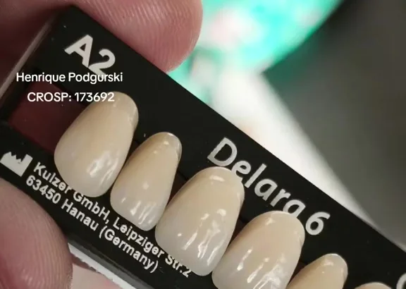
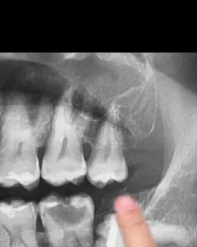
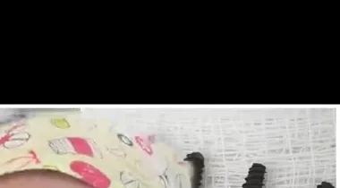
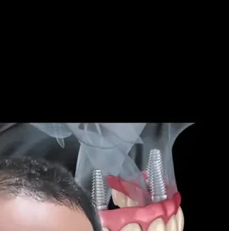

"Carga imediata, o que ninguém te conta."
Dr. Henrique PodgurskiCirurgião-dentista · CRO-SP 173692

Cirurgião-dentista · Implantes e prótese
Dente fixo, do jeito certo.
Implantes, protocolo e próteses planejados com tomografia e montados com dente importado de várias camadas. No Jardim Paraguaçu, Zona Leste de São Paulo.
"Eu não falo o que o paciente quer escutar. Eu falo o que o paciente precisa escutar."
Dr. Henrique, no TikTok
- CRO-SP 173692
- 29,9 mil no TikTok
- Dente importado
O que ninguém te conta sobre prótese
Prótese faz parte da saúde. E saúde não se brinca e nem se economiza. O dente barato, de uma camada só, não tem vida e não dura. Nas minhas próteses eu nunca uso esse dente, nem na provisória.
Dr. Henrique Podgurski
O dente que vai na sua boca
Não é tudo igual.
Dente de prótese é de resina acrílica. A diferença está nas camadas: o dente de estoque tem uma, cor chapada e desgasta rápido. O importado tem três ou quatro, com translucidez na ponta e anatomia de dente de verdade.
- 1 camada de resina
- 2 corpo com cor de dentina
- 3 esmalte com brilho
- 4 borda translúcida
Dente de estoque
"É um negócio chapadão que está ali só pra dizer que é um dente." Mais barato na hora, mais fraco no dia a dia.
Toque nos dentes que faltam
Onde falta?
Mostre o seu sorriso de hoje.
Nenhum dente marcado
Toque nos dentes que faltam
Marque na arcada os espaços de hoje, ou use os atalhos se falta tudo em cima ou embaixo. Você vê o caminho que costuma entrar na conversa.
Mapa ilustrativo. Quem define o tratamento é a avaliação presencial, com exame e tomografia.
Carga imediata e protocolo
Carga imediata é boa. Não é pra todo mundo.
Implantes e dentes fixos em poucos dias é o que todo mundo quer ouvir. Funciona quando o caso tem os pré-requisitos, e pode virar dor de cabeça quando não tem. Por isso, antes de prometer, o Dr. Henrique avalia.
- 35 Né o torque mínimo citado nos estudos pra pensar em carga imediata. E nem isso é garantia.
- Suflê"O osso de cima é tipo um suflê." Na maxila, nem sempre o implante pega firme na hora.
Será que é pra você?
Responda o que vale pra você hoje.
- Você fuma?
- Tem diabetes?
- Tem pressão alta?
- Sua saúde geral está em dia?
Responda as 4 perguntas
É uma triagem rápida, só pra você chegar na consulta sabendo o que perguntar.
Não é diagnóstico. Fixação dos implantes, osso e mordida só se avaliam na consulta, com tomografia.



01/04
Como funciona
Do exame ao dente fixo, sem atalho.
Avaliação com tomografia
Conversa, exame clínico e imagem. A tomografia mostra o osso, o nervo e o que dá pra fazer com segurança. Sem ela, não tem cirurgia.
"Eu não sou doido de arrancar um dente desse sem uma tomografia."
Planejamento honesto
Implante unitário, ponte, protocolo, dentadura ou PPR: a indicação sai do seu caso, não da vitrine. Se carga imediata não for seguro, você fica sabendo antes.
"Carga imediata é bom. É pra todo mundo? Não é pra todo mundo."
Implantes e mordida equilibrada
Os implantes entram com boa fixação, e a prótese é construída com a mordida balanceada, para nenhum implante trabalhar sobrecarregado.
"Grande parte das perdas está relacionada com a falta de balanceamento na mordida."
Dente importado e revisão
Prótese com dente de várias camadas, na cor e no formato certos. Depois, revisão a cada seis meses, porque é assim que o tratamento dura.
"Acaba a prótese, mas não acaba o dente."
Tratamentos
O foco é implante e prótese. O cuidado é completo.
Do TikTok · 29,9 mil seguidores
O que o paciente precisa escutar.
@henrique_podgurski4,8 mil views
Carga imediata no protocolo.
"Você acha que a gente quer seu dinheiro?"
Prótese por preço ou por qualidade?
Clareamento a laser em quem tem lente?
São 455 vídeos respondendo quem tem medo, vergonha ou dúvida. Se ficou alguma, pergunta direto.
Perguntar no WhatsApp29,3 mil views
Quem atende
"Amo implantes. Amo prótese dentária."
Dr. Henrique Podgurski é cirurgião-dentista na Zona Leste de São Paulo. No consultório e no TikTok, a regra é a mesma: explicar de verdade, sem empurrar o tratamento mais caro e sem vender o que você não precisa.
- Tomografia antes de cirurgia. Nervo, osso e risco vistos antes, não depois.
- Dente importado de várias camadas. Na definitiva e também na provisória.
- Carga imediata só quando é seguro. Se o seu caso pede outro caminho, você fica sabendo.
- Diagnóstico antes de vender. Já recebeu paciente com lente de contato a quem tinham oferecido clareamento a laser.
- Estudando sempre. Segue em curso de aprimoramento em implantes e protocolo.
- 29,9mil seguidores
- 86,4mil curtidas
- 455vídeos explicando
Dente de prótese é dente de gente morta?
Não. Dentes de prótese total, dentadura, flexível e PPR são de resina acrílica. O que muda é a qualidade: dente de uma camada é fraco e sem vida; o importado, de três ou quatro camadas, tem anatomia, cor natural e muito mais resistência.
Carga imediata é pra todo mundo?
Não. Ela é boa quando o caso tem os pré-requisitos: saúde em dia, não fumar, diabetes e pressão controladas, boa fixação dos implantes e uma prótese com a mordida equilibrada. Quem confirma é a avaliação com tomografia.
Por que uma prótese custa mais que outra?
Pelo dente usado, pelo laboratório e pelo planejamento. Prótese com dente de estoque sai mais barata e dura menos. Prótese faz parte da saúde, e o barato que frustra acaba saindo mais caro.
Preciso mesmo ir ao dentista a cada seis meses?
Precisa. Uma "bolinha pequena" na gengiva pode esconder um problema que leva dois ou três dentes. Revisão não é para vender tratamento, é para você não perder dente.
Clareamento a laser funciona?
Desconfie de clareamento oferecido sem exame. Primeiro se avalia o que tem na boca (restauração, lente, coroa) e depois se indica o que faz sentido.
Uso dentadura. Dá pra trocar por algo fixo?
Muitas vezes sim, com protocolo sobre implantes. A tomografia mostra se tem osso suficiente e se cabe carga imediata ou se o implante precisa cicatrizar antes.
Avaliação
Marque sua avaliação. A mensagem sai pronta.
Escolha as opções e o WhatsApp do consultório abre com tudo escrito. Nada fica salvo no site.
Dr. Henrique PodgurskiWhatsApp · (11) 95654-6924
Consultório
Jardim Paraguaçu, Zona Leste.
Rua Cachoeira do Campo, 278 · Sala 05Jardim Paraguaçu, São Paulo · SP
CEP 03938-130
Pertinho do Jardim Imperador e de São Mateus. Atendimento com horário agendado.